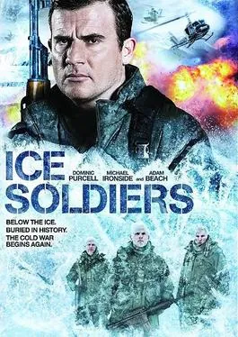

The genetics
The villains are genetically modified super-soldiers: according to Wikipedia, Soviet political extremists created them in 1962 with the help of a captured Nazi scientist, to carry out a terrorist attack on New York that would start a third world war. The modification makes them nearly invulnerable, able to regenerate and to survive fifty years frozen, but the film says nothing about how it was done; the Moria review compares the premise to Nazi zombie films. Heredity enters at the end, when Malraux, the scientist who hunts them, reveals that he is the son of one of the soldiers and admits that, like his mother, he is not sure what kind of man he carries inside him. Genetics here is a Cold War weapon of extremists, and the inherited taint a source of unease rather than an explored idea.
How genetics is portrayed
- Overall portrayal of genetics
- negative Genetic modification is a weapon of extremists aided by a Nazi, producing unstoppable killers, and the film ends with the hero's unease about the heredity he carries.
- Outcome of the genetic intervention
- negative The super-soldiers massacre Canadian troops in 1962 and again in the present, kill townspeople and police, and one of them rapes a scientist, before they are killed.
- Soviet political extremists and a captured Nazi scientist
- villain Aim: military, malevolent (negative). In the backstory, extremists with the help of a captured Nazi scientist genetically modify three Soviet soldiers to carry out a terrorist attack on New York and start World War III.
The story
In 1962, during the Cuban Missile Crisis, Canadian troops in the Arctic find a crashed Soviet plane carrying three soldiers with superhuman abilities; taken to a base for examination, the soldiers break free, kill many of the troops and vanish into the wilderness. Fifty years later, a Canadian military and scientific team finds them frozen in the ice, still alive and slowly regenerating. Dr. Andrew Malraux, fearing what they will do, tries to cut off their life support and is locked up, but the soldiers wake and massacre most of the team. Malraux escapes and, guided by a Cree ex-convict whose father survived the first rampage, follows the soldiers as they steal explosives, blow up a town's power plant and kill its police, still carrying out their old mission. Malraux kills two in a chase and stabs the last as he tries to board a plane to New York. He then reveals that this soldier raped his scientist mother: he is his son.